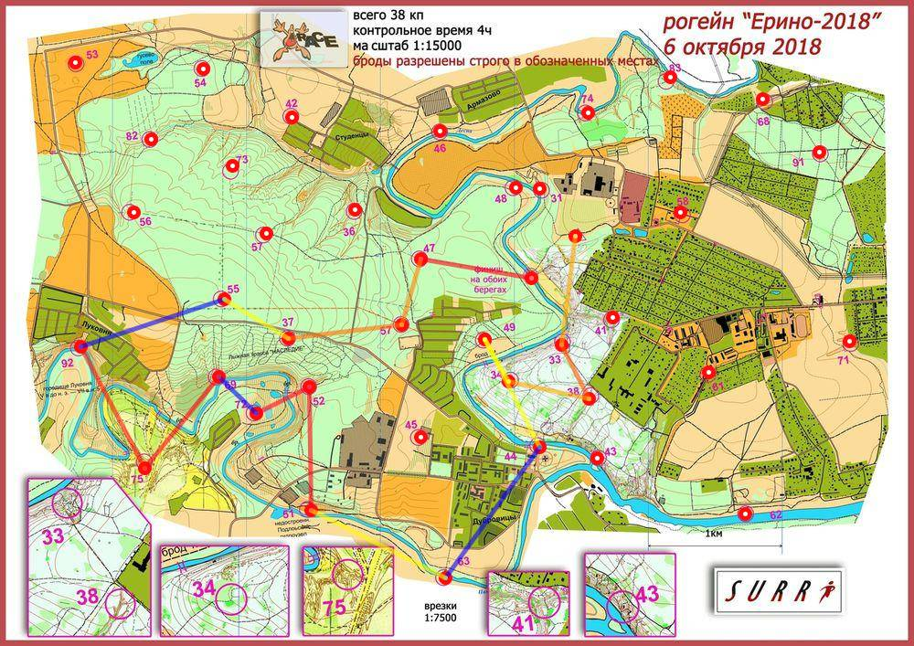

| Участники | Зубалий Анастасия Никонов Михаил |
| Группа | МЖ4Б |
| Место | 8 |
| Очки | 79 |
| Штраф | 4 |
| Время | 04:01:46 |
| Результат | 75 |
| КП | Время | Сплит | Расстояние, км | Темп, мин/км |
|---|---|---|---|---|
| С | 12:00:00 | |||
| 33 | 12:10:47 | 00:10:47 | 0.82 | 13.1 |
| 38 | 12:18:00 | 00:07:13 | 0.443 | 16.3 |
| 34 | 12:25:55 | 00:07:55 | 0.615 | 12.9 |
| 49 | 12:25:56 | 00:00:01 | 0.36 | <1 |
| 44 | 12:25:57 | 00:00:01 | 0.901 | <1 |
| 63 | 13:18:58 | 00:53:01 | 1.201 | 44.1 |
| 51 | 13:29:59 | 00:11:01 | 1.125 | 9.8 |
| 52 | 13:50:38 | 00:20:39 | 0.92 | 22.4 |
| 72 | 14:01:31 | 00:10:53 | 0.444 | 24.5 |
| 69 | 14:20:02 | 00:18:31 | 0.388 | 47.7 |
| 75 | 14:38:58 | 00:18:56 | 0.875 | 21.6 |
| 92 | 14:58:00 | 00:19:02 | 1.026 | 18.6 |
| 55 | E | E | 1.126 | >999 |
| 37 | 15:23:03 | E | 0.561 | <1 |
| 59 | 15:36:04 | 00:13:01 | 0.855 | 15.2 |
| 47 | 15:43:25 | 00:07:21 | 0.507 | 14.5 |
| Ф | 16:01:46 | 00:18:21 | 0.838 | 21.9 |
| 04:01:46 | 12.445 км | 19.4 мин/км |
